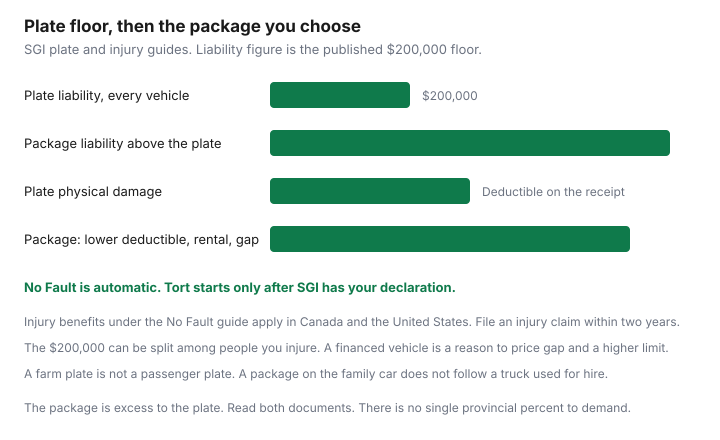

Insurance · Canada
Saskatchewan SGI Auto Insurance: Basic Plate Coverage vs Package Upgrades Worth Paying For
Saskatchewan registers a vehicle and insures it in the same transaction. The plate is the compulsory policy. It is enough to be legal. It is often not enough to be done. Households find that out when a claim is larger than $200,000, when a lender asks about gap, or when the deductible on the registration receipt is more cash than the month can spare. This page is the plate, the injury choice at a high level, the package pieces worth pricing, farm and light-truck quirks, travel outside the province, and when a broker-sold package beats staying at the minimum. Manitoba’s Autopac numbers are a different system. Alberta’s private market is a different system again.
Disclosure: Broker quote portals are an offer type for a package policy above the plate. Saving Optimizer may earn a commission if those links are added later. We do not claim a partnership with SGI or any insurer. Plate facts below are from SGI’s own guides, used 24 Sep 2026. Education only. Your registration receipt and the package cover page control.
Key takeaways
- Plate insurance includes up to $200,000 of liability. That amount can be divided among the people you injure. It is the Canadian floor SGI itself tells motorists to revisit.
- No Fault injury coverage is automatic. Tort requires a declaration filed with SGI. The guide is context. It is not an election for you.
- A package is a second contract. The useful buys are liability above $200,000, a lower deductible you can actually fund, a rental, and loan or lease gap when a lender is owed more than the vehicle is worth.
- A farm plate is not the family car. A package on a passenger vehicle does not follow a truck used for hire.
- No Fault injury benefits, as SGI describes them, apply in Canada and the United States. Price a higher liability limit before a trip. Mexico needs a policy that says Mexico.
- File an injury claim within two years of the collision. That clock is in SGI’s injury guides.
What plate insurance already includes at registration
SGI’s driver handbook on vehicle registration splits cover into two purchases. Basic minimum coverage is required by law, bought when you pay for plates and registration, and provided by SGI. Additional coverage, also called extended auto insurance, a package policy, or an Auto Pak, is a separate policy from an insurer, broker, or agent you choose.
The plate’s liability limit is $200,000. SGI’s tort guide and the handbook both say so, and both say every registered Saskatchewan vehicle has at least that amount. If you are sued, the plate responds first, up to that figure. If several people are hurt, the $200,000 is divided among them. Damage to your own vehicle is included subject to a deductible printed on your registration. This page does not state a universal deductible, because the receipt is the number and a broker blog’s figure goes stale. Injury benefits come with the plate as well. Fault still matters for the deductible and for the Safe Driver Recognition program, which SGI’s No Fault guide says can assess a financial penalty when you are responsible.

Tort vs no-fault injury option context at a high level
Saskatchewan residents are on No Fault injury coverage unless they choose Tort and file a declaration. SGI’s guide to choosing says that if you have not filed, you are on No Fault, and that you file again if you want to move back. The coverage that counts is the one in force on the date of the collision.
No Fault, as SGI’s guide describes it, pays injury benefits regardless of fault, including a single-vehicle crash, anywhere in Canada or the United States. It restricts the right to sue for pain and suffering in most cases. Tort is the election that preserves a different right to sue, and SGI says the Tort benefit package does not cover as many things. That difference matters even if you stay on No Fault: SGI’s choosing guide says someone on Tort who is hurt can sue for expenses above their benefits, so the chance of being sued rises, and the $200,000 plate limit is what stands in front of your other assets until a package adds more.
You have two years from the collision to file an injury claim. That sentence is in both the No Fault guide and the tort guide. File sooner if you are hurt. The election between Tort and No Fault is a personal decision with a form, not a switch this page will throw for you. If you are unsure, ask SGI for the current declaration instructions and read the guide they publish before you sign.
Package add-ons: higher liability, loan/lease gap, rental
The handbook lists what extended insurance is for: replacement cost, a rental if the vehicle is damaged, a lower deductible, a top-up of injury coverage, and, in its words, most importantly, liability above the $200,000 minimum. Use that list as a shopping order, not as a bundle you must buy whole.
| Buy this if | What you are fixing |
|---|---|
| Liability above $200,000 | A lawsuit, a trip outside Saskatchewan, or several people hurt in one crash. SGI says the plate figure is only the Canadian minimum and points motorists to an insurance professional for the rest. Common package limits run into the millions. The cover page shows the number you bought. |
| Lower deductible | The plate deductible is more than you can pay from the emergency fund without missing a bill. If you can pay the plate deductible, a lower one is optional comfort, not the first dollar you spend. |
| Rental or loss of use | You have no second vehicle. Ask the daily limit and the number of days. A package that names a dollar maximum is not an open rental car. |
| Loan, lease, or replacement cost | You owe a lender more than the vehicle would settle for, or the vehicle is new enough that a replacement-cost wording matters. Gap is not liability. Buy it when the loan exists. Drop it when the loan is gone. |
A package is excess to the plate. SGI CANADA’s older Auto Pak booklet describes liability as excess to licence insurance, up to the amount on the cover page. Your insurer may not be SGI CANADA. Read the excess language on the form you were sold. If you drive for a platform, the rideshare guide already notes Uber’s Saskatchewan wording: an Auto Pak does not apply during an engaged trip, and basic plate insurance still does. A package you bought for a lower deductible can be absent in the hour you most expect it.
Farm and light commercial quirks common in SK households
A lot of Saskatchewan driveways hold a passenger car and a truck that sometimes does farm work. The plate class has to match the use.
- SGI publishes a farm-vehicle page because a farm plate is its own registration. A passenger package does not automatically cover a farm-plated truck, and a farm truck used for custom work or hire can fall outside the use you declared. Ask the issuer, with the plate class in front of you, before the busy season.
- A light truck that is the family vehicle on weekdays and a farm truck on weekends needs one true primary use. The garaging address and the kilometres are part of that answer.
- Cargo, a trailer, and a non-owned piece of equipment are separate questions. The plate’s liability examples on the registration page include buildings, fences, and railway property. A package does not insure a commercial contract you never mentioned.
If the answer is unclear, write the use in an email and keep the reply. A verbal “you’re fine” at the counter is hard to produce after a loss.
Out-of-province travel with SGI basic
The plate is what lets a currently registered Saskatchewan vehicle operate in Canada and the United States. That is the territory SGI’s Auto Fund has described, and it matches the No Fault guide’s injury map: benefits for a collision anywhere in Canada or the United States. It is not a reason to travel on $200,000 of liability.
Outside Saskatchewan, SGI’s registration page says many losses still depend on fault and on where the crash happened. Damage to property that is not another automobile, and injuries outside the province, are the lawsuits the $200,000 has to absorb until a package sits above it. Your right to sue may be limited by the other jurisdiction even if you elected Tort at home. The two-year Saskatchewan injury-claim clock is not the other province’s lawsuit deadline. If you are hurt outside Saskatchewan, ask about both clocks.
Mexico is not the United States. Unless the package or a separate policy says Mexico in writing, do not treat the plate as Mexican liability. Buy the policy that names the country before you cross, the same rule as on the RV guide.
When a broker-sold package beats DIY minimums
Staying at the plate is a finished decision only when you have priced the alternative and rejected it. It is an unfinished decision when you have never seen the package premium.
- Ask one broker or insurer for a package at a stated liability limit, often $1 million or $2 million, with the plate deductible left as it is. That quote isolates the lawsuit problem.
- Ask for a second version that also lowers the deductible and adds a rental, and a third that adds gap only if a loan exists. Three prices, one vehicle, written down.
- Compare the annual difference with what a single claim above $200,000 would do to savings. The broker-versus-direct method is how to keep the limits identical. In Saskatchewan the plate does not move. The package does.
- If you have no loan, no travel, a vehicle you could replace, and an emergency fund that covers the plate deductible, a higher liability limit can still be the one line worth buying, because the $200,000 is shared. The deductible buy-down can wait.
Renew the package when you renew the plate. A lapsed package leaves you at $200,000 without a ceremony. Put both dates on the annual review.
Sources & date stamps
- SGI, vehicle registration handbook — plate insurance up to $200,000 liability; extended coverage as a separate policy for replacement cost, rental, a lower deductible, injury top-up, and higher liability. Used 24 Sep 2026.
- SGI, Your Guide to No Fault Coverage and Your Guide to Tort Coverage — default No Fault unless a Tort declaration is filed; two years to file an injury claim; $200,000 divided among claimants; Canada and the United States for No Fault injury benefits. Used 24 Sep 2026.
- SGI, Guide to Choosing — how the declaration works, and why Tort changes lawsuit exposure even for a No Fault driver. Used 24 Sep 2026.
- SGI’s farm-vehicle page is the place to confirm plate class. A passenger package does not automatically follow a farm truck. No universal deductible is stated; use the registration receipt.
Frequently asked questions
What does Saskatchewan plate insurance include?
SGI’s registration handbook says basic coverage is compulsory, bought with the plates, and includes up to $200,000 of liability. It also includes damage cover subject to a deductible and personal injury benefits. The deductible on your registration receipt is the number. This page does not invent a provincial deductible.
Do I have to choose tort or no-fault?
No Fault is the default. Tort starts only if you file a declaration with SGI. SGI’s guides say you may switch, and that the coverage in force on the date of a collision is the coverage for that injury. Injury claims should be filed within two years. This is context, not a recommendation to elect tort.
Does the plate cover a trip outside Saskatchewan?
SGI’s No Fault guide says injury benefits apply to a collision anywhere in Canada or the United States. The plate’s $200,000 liability is a thin ceiling if you are sued outside Saskatchewan, and it can be split among the people hurt. A package is where you buy a higher limit. Do not assume Mexico is included.
When is a package worth paying for?
When $200,000 would not cover a lawsuit, when a lender wants a higher limit or gap cover, when the plate deductible is more than the emergency fund can pay, or when you want a rental while the vehicle is repaired. Price the package against those facts. A percentage from another province is not a Saskatchewan price.
Is this brokerage advice?
No. Education only. Broker quote portals are an offer type for a package policy above the plate. We do not claim a partnership with SGI or any insurer.